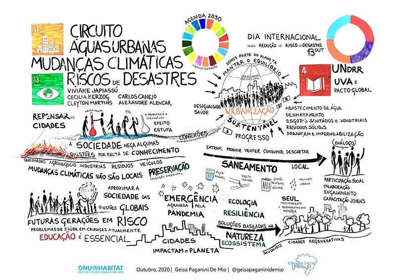
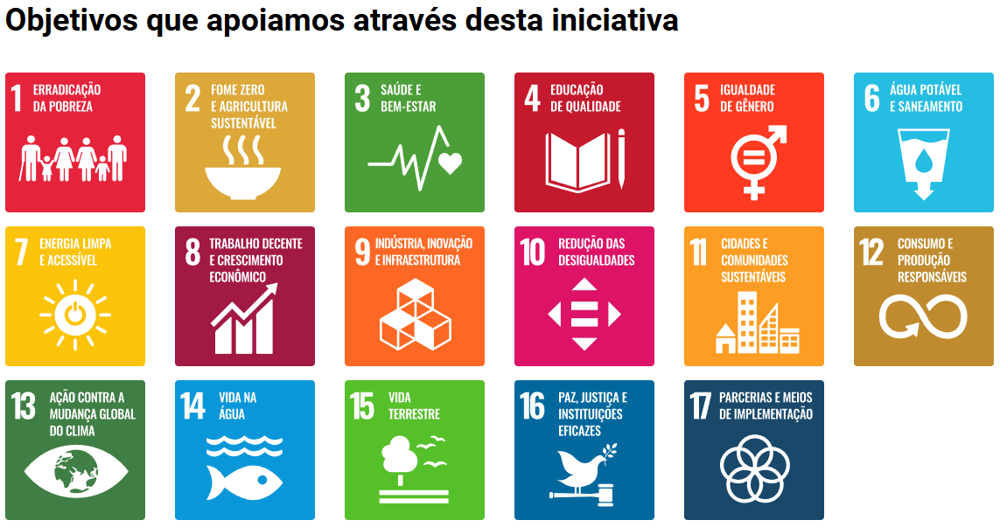

| Dia internacional da tradução | Home Sobre Personalidades |
Bem Vindo(a)!Todo ano, no primeiro segunda-feira de outubro, celebramos o Dia Mundial do Habitat, uma data dedicada à reflexão e ação em torno da importância dos lares e das comunidades para a qualidade de vida. Este dia foi instituído pela Assembleia Geral das Nações Unidas para promover o direito a um habitat adequado e sustentável para todos. Com o crescimento urbano acelerado e os desafios ambientais que enfrentamos, é essencial destacar a necessidade de cidades inclusivas, seguras e resilientes. Através de iniciativas e campanhas, o Dia Mundial do Habitat nos convida a explorar soluções para a habitação acessível, a proteção do meio ambiente e a promoção de espaços urbanos que favoreçam o bem-estar e a dignidade de cada cidadão. Junte-se a nós nesta jornada! Vamos discutir, aprender e agir juntos para garantir que todos tenham um lugar digno para viver.  |
O que é o dia do Habitat?O Dia Mundial do Habitat é comemorado na primeira segunda-feira de outubro. Instituído pela Assembleia Geral das Nações Unidas em 1985, o dia visa promover a consciência sobre a importância de um habitat adequado para todos. A data também destaca os desafios enfrentados pelas cidades e comunidades, como a urbanização, a pobreza e a falta de moradia. Em cada ano, há um tema específico que orienta as discussões e atividades, promovendo ações para melhorar as condições de vida nas áreas urbanas. Nesse dia tem como objetivo conscientizar sobre a importância de um ambiente urbano saudável e acessível, promovendo o direito à habitação. A data destaca os desafios enfrentados pelas cidades, como o crescimento descontrolado, a poluição e as desigualdades sociais, incentivando discussões sobre como abordá-los. Também enfatiza a participação comunitária na elaboração de políticas públicas, promovendo um senso de pertencimento e responsabilidade. Além disso, busca garantir moradias acessíveis e de qualidade, especialmente para grupos vulneráveis, e compartilha soluções inovadoras implementadas em diferentes partes do mundo para melhorar as condições de vida urbanas. Assim, o dia é uma oportunidade para refletir sobre como construir cidades mais inclusivas, sustentáveis e resilientes.  Ler mais
Ler mais
|
Quem foi São Jerônimo e porque ele é tão importante?OrigensSofrônio Eusébio Jerônimo é o nome completo de São Jerônimo. Nasceu em Estridão, atual Croácia. Não se sabe a data exata do seu nascimento, estima-se que seja por volta de 347. De família cristã e rica, São Jerônimo recebeu uma sólida educação e, ajudado pelos seus pais, completou os estudos em Roma. Ali, deu-se à vida mundana, deixando-se levar pelos prazeres. Porém, logo se arrependeu, recebeu o Batismo e seguiu a vida contemplativa. Ler mais |
| Obrigado pela atenção! Fim da pagina |